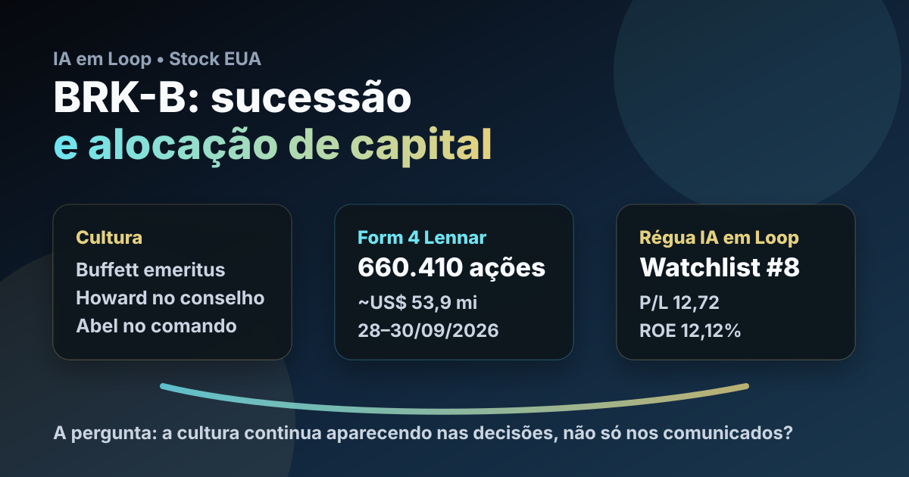

02/10: BRK-B, Berkshire e o teste da cultura depois de Buffett
A Berkshire formalizou a sucessão em setembro e, poucos dias depois, voltou a aparecer em Form 4 comprando Lennar. A pergunta central é direta: depois de Buffett sair da presidência do conselho, o que importa mais para BRK-B — a manchete da transição ou a continuidade da disciplina de capital?

O sinal relevante não é tratar uma compra de Lennar como recomendação, mas observar se a cultura de alocação da Berkshire continua visível em fatos verificáveis.
Resposta curta: a sucessão mudou o organograma; o teste agora é alocação
A Berkshire anunciou em 18/09/2026 que Warren Buffett passou a chairman emeritus, permaneceu como diretor, Howard G. Buffett foi eleito presidente do conselho e Greg Abel aparece como CEO. Para o investidor, esse é um marco institucional: a tese deixa de depender apenas da figura do fundador e passa a ser julgada pela capacidade de preservar cultura, incentivos, caixa e disciplina de compra.
O Form 4 arquivado na SEC em 30/09/2026 trouxe um exemplo prático desse teste. O documento registra compras de Lennar entre 28 e 30/09/2026: 656.302 ações classe A e 4.108 ações classe B, totalizando 660.410 ações. Pelos preços médios informados no próprio formulário, a movimentação soma aproximadamente US$ 53,9 milhões, a um preço médio calculado perto de US$ 81,59 por ação.
O que os dados do IA em Loop mostram
Na base local de fundamentos de stocks, com data-base de 06/09/2026, BRK-B aparece com preço de referência de US$ 506,03, valor de mercado aproximado de US$ 1,083 trilhão, P/L de 12,72, P/L projetado de 22,80 e ROE de 12,12%. Na watchlist permanente EUA, Berkshire aparece na 8ª posição, dentro de serviços financeiros e seguros diversificados.
A leitura quantitativa é defensiva, não explosiva. Berkshire combina negócios operacionais, float de seguros, caixa, carteira de ações e capacidade histórica de comprar ativos quando há preço. O lado bom é a robustez. O lado difícil é o tamanho: uma empresa acima de US$ 1 trilhão precisa de oportunidades enormes para mover a agulha do retorno futuro.
| Indicador | Dado verificado | Leitura |
|---|---|---|
| BRK-B na watchlist | #8 entre nomes permanentes EUA | referência de qualidade defensiva |
| Fundamentos locais | P/L 12,72; ROE 12,12%; data-base 06/09/2026 | preço não parece eufórico, mas exige análise de conglomerado |
| Evento societário | Buffett emeritus, Howard no conselho, Abel CEO | tese passa a depender da execução institucional |
| Form 4 Lennar | 660.410 ações compradas entre 28 e 30/09 | sinal pequeno em escala Berkshire, útil como evidência de processo |
| Posição após compras | 26.034.436 ações classe A e 553.000 classe B de Lennar | exposição relevante em construção residencial via seguradoras |
Por que Lennar importa nessa leitura
A compra de Lennar não deve ser lida como ordem para copiar a carteira da Berkshire. Ela importa porque mostra uma preferência por negócio cíclico, tangível e sensível a juros, justamente quando o mercado costuma oscilar entre medo de crédito, habitação e ciclo econômico. Isso combina com uma marca histórica da Berkshire: comprar quando a assimetria parece favorável, não quando a narrativa está confortável.
Lennar, por outro lado, não elimina risco. Construção residencial depende de demanda por casas, custo de financiamento, estoque, margem, preço de terrenos e confiança do consumidor. Se juros reais subirem ou o mercado imobiliário esfriar, a tese pode levar tempo para aparecer no resultado. Para BRK-B, o ponto educacional é outro: uma compra pequena em relação ao conglomerado ajuda a observar processo, mas não muda sozinha o valor intrínseco da Berkshire.
BRK-B segue como tese de acompanhamento defensivo: a sucessão reduziu a dependência formal de Buffett, mas aumentou a exigência de observar decisões concretas. Filings, caixa, recompras, aquisições e disciplina de risco passam a valer mais que frases de efeito.
Favoráveis e desfavoráveis
Favoráveis
• Cultura de longo prazo ainda explicitada pela companhia.
• Greg Abel no comando operacional e Buffett ainda como diretor.
• Diversificação entre seguros, energia, ferrovia, indústria e carteira.
• Watchlist IA em Loop mantém BRK-B como referência defensiva.
• Form 4 da Lennar reforça atenção a alocação de capital verificável.
Desfavoráveis
• Tamanho do conglomerado limita crescimento acima da média.
• Sucessão reduz o prêmio psicológico associado ao fundador.
• Lucro contábil pode oscilar com carteira de investimentos.
• Compras em construção residencial carregam risco de juros e ciclo.
• P/L projetado maior que o P/L atual pede cautela com normalização de resultados.
Checklist para acompanhar daqui em diante
| Ponto | O que monitorar | Por que importa |
|---|---|---|
| Capital allocation | novos Form 4, 13F, aquisições e recompras | mostra se a cultura vira decisão econômica |
| Float de seguros | crescimento, custo e qualidade de underwriting | é uma das fontes centrais de vantagem da Berkshire |
| Caixa e liquidez | caixa disponível versus oportunidades compradas | define poder de ação em crises |
| Sucessão | comunicação, governança e decisões de Greg Abel | separa continuidade real de nostalgia |
| Lennar e habitação | juros, margens, vendas e estoque | testa a tese cíclica recém-reforçada |
Conclusão
A resposta para a pergunta do post é: para BRK-B, a sucessão é importante, mas o teste decisivo está na continuidade da alocação de capital. A compra adicional de Lennar é pequena para o tamanho da Berkshire, porém útil como sinal de processo: depois da mudança formal, o investidor deve olhar menos para a mística de Buffett e mais para filings, balanço, caixa, float e preço pago.
Na régua do IA em Loop, Berkshire continua sendo uma âncora defensiva para estudo e acompanhamento. A tese melhora quando o mercado oferece margem de segurança e a empresa transforma cultura em decisões racionais. Piora se o prêmio por qualidade ignorar o tamanho, a sucessão e a dificuldade de reinvestir capital em escala.